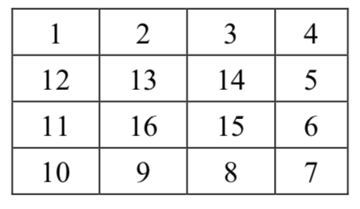

一个n行n列的螺旋矩阵可由如下方法生成：
从矩阵的左上角（第1行第1列）出发，初始时向右移动；如果前方是未曾经过的格子，则继续前进，否则右转；重复上述操作直至经过矩阵中所有格子。根据经过顺序，在格子中依次填入$1, 2, 3, ... ,n^2$，便构成了一个螺旋矩阵。
下图是一个n= 4时的螺旋矩阵。

现给出矩阵大小$n$以及$i$和$j$，请你求出该矩阵中第$i$行第$j$列的数是多少。
输入共一行，包含三个整数$n，i，j$，每两个整数之间用一个空格隔开，分别表示矩阵大小、待求的数所在的行号和列号。
输出共一行，包含一个整数，表示相应矩阵中第$i$行第$j$列的数。
4 2 3
14
【数据说明】
对于50%的数据，$1≤n≤100$；对于100%的数据，$1≤n≤30,000，1≤i≤n，1≤j≤n$。
 Comet OJ
Comet OJ